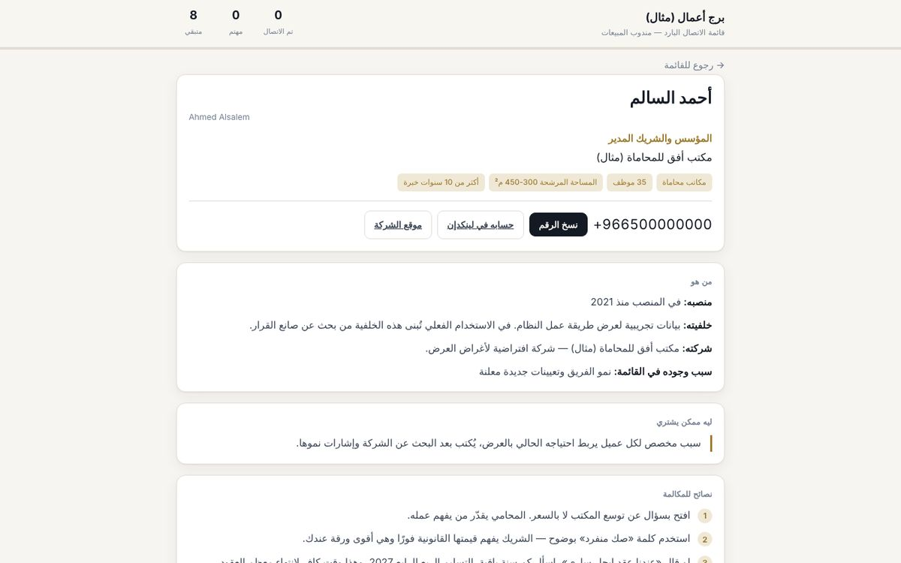

Cold-calling system
A calling list for a sales rep, with a brief for every name: who they are, why we are calling, and what to say.

The problem
Reps call a list of names they know nothing about, open every call with the same line, and get hung up on.
How it works
- Research on each company and its decision-maker before any call.
- A card per call: background, a reason to get in touch, and talking points.
- Log each outcome and keep track of who is left.
Try it yourself
Open any name on the list to see its call card, then log an outcome. The demo interface is in Arabic.
All names and companies are fictional.